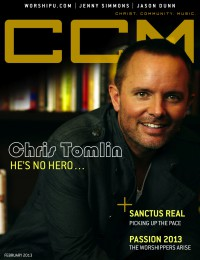

CCM Digital
Feb 2013
| Cover |
|---|
|  |
 Online Exclusively Online Exclusively |
| Writers in this Issue |
| Argyrakis, Andy Aspinwall, Grace S. Colville, Cindy Wilt Conner, Matt Durbin, Emily Evans, Russell Greer, Andrew Lusk, Caroline Riddle, Melissa Siler, Steve Tasker, Nathan Young, Sarah |
Chris Tomlin
Cover Feature:- "He's No Hero" by Caroline Lusk
- "Picking Up the Pace" by Caroline Lusk
- "The Realness of Red" by Caroline Lusk
- "Another Road: Becoming Found" by Emily Durbin
- "Passion 2013: The Worshippers Arise"Passion Conferences, Cheryl Bell interviewed
- "WorshipU: To the Ends of the Earth" by Caroline LuskBethel School of Worship
- Todd Ballard by Caroline Lusk
- "Exalting the Name" by Caroline Lusk
- "The Power of Worship!" by Russell Evans
- Sandra McCracken by Matt Conner
- Kurt Carr by Andrew Greer
- Jason Dunn by Matt Conner
- Love and Death by Andy Argyrakis
- "The Invisible" by Melissa Riddle
- "Newtown: A Night of Hope and Healing" by Caroline LuskTribute Concert for Sandy Hook
- Julie Elias by Andy Argyrakis
- Jesus Culture, Martin Smith
- "Only God is Perfect" by Steve Siler
- "Ed Cash, Producer / Engineer"
Reviews & New Releases:
- Jesus Culture, Martin Smith - Live from New York by Grace S. Aspinwall
- The Planetshakers - Limitless by Grace S. Aspinwall
- Hillsong Chapel - Forever Reign by Grace S. Aspinwall
- Casey Corum - This Is Your Kingdom Come Now by Matt Conner
- Jeremy Camp - Reckless by Matt Conner
- Casting Crowns - The Acoustic Sessions by Grace S. Aspinwall
- Warren Barfield - Redbird by Andrew Greer
- Sanctus Real - Run by Andy Argyrakis
- Hearts of Saints - For All of Us by Andy Argyrakis
- Red - Release the Panic by Matt Conner
- Capital Kings - Capital Kings by Matt Conner
- Jason Truby - Our Time Here by Matt Conner
- Sandra McCracken - Desire Like Dynamite by Andrew Greer
- Thrice - Anthology by Andy Argyrakis
- Julie Elias - A Wild Rose by Matt Conner
- The Likes of Us - The Likes of Us by Andy Argyrakis
- Kurt Carr - Bless This House by Andrew Greer
- Dottie Peoples - I Got This - Live! by Andrew Greer
- Donald Lawrence & The Tri-City Singers - Seasons: A 20 Year Celebration by Andrew Greer
- Lifehouse - Almeria by Andy Argyrakis
- Dionne Warwick - Now by Andy Argyrakis
- The Hoppers - Count Me In by Grace S. Aspinwall
- "The Story Tour, Sears Centre, Hoffman Estates, IL" by Andy Argyrakis
- "Stop Judging" by Sarah Young
- "The Firm Foundation" by Nathan Tasker
- "You Can't Give What You Don't Have" by Caroline Lusk
- "Good to Great" by Cindy Wilt Colville
© 2011 CMnexus. Last updated May 2025. Contact: editor -AT- cmnexus -DØT- org